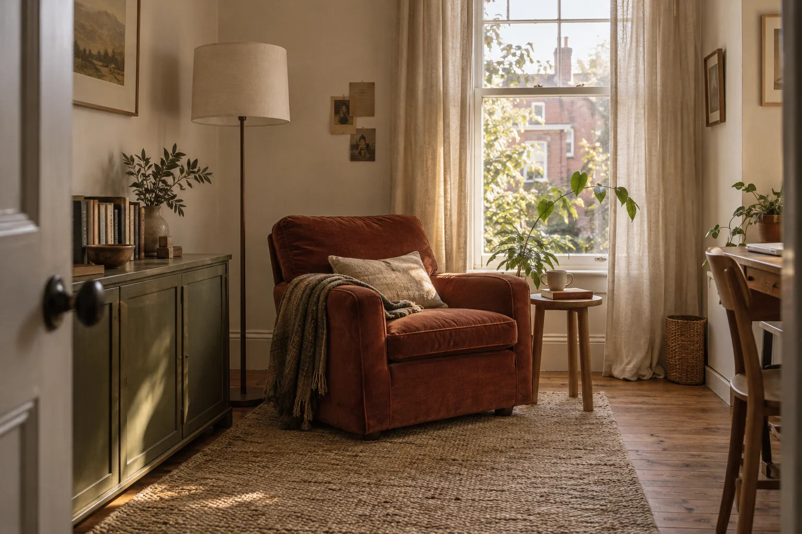

Give the chair useful neighbours.
A small oak side table and a simple floor lamp keep the immediate essentials close, without adding another large piece of furniture.
The brick-red armchair and the books came first. This room is an edit around those familiar things, for reading, a quiet cup and the occasional afternoon of work.

A familiar chair, with a little more room around it.
A couple wanted the room to feel settled without making it precious. The practical question was simple: where do the lamp, book and cup go, and can the room still be passed through comfortably?
A small oak side table and a simple floor lamp keep the immediate essentials close, without adding another large piece of furniture.
A muted olive cabinet holds books and a few daily objects while leaving the wall and window to bring light into the room.
Natural linen curtains and a textured neutral rug bring a softer layer around the retained chair. A clear route through the room remains part of the arrangement.
The retained armchair
Low cabinet direction
Curtain direction
A small side table
These original colour and texture studies describe a direction. They are not physical samples, supplier products, technical specifications or performance claims.
A furniture arrangement, retained-object list, finish palette and selection schedule for one room. No built-in joinery or building works are included.
Confirm the retained items, working habits and separate furniture/supply allowance before selections are finalised.
Any electrical or installation work is separately appointed and checked. A lamp selection is not an electrical design or installation service.
Original concept room, 2026. Furnishings and finishes are direction, not purchasable product listings or a claim that the room has been built.